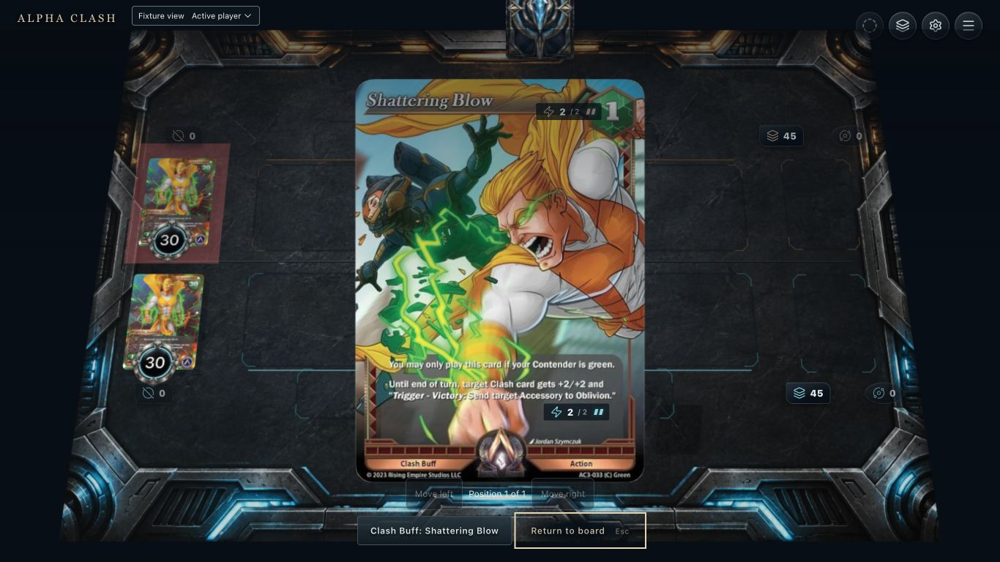
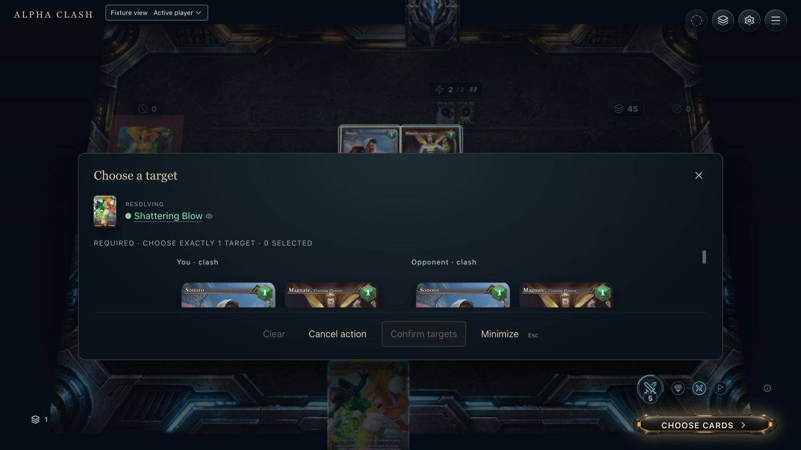
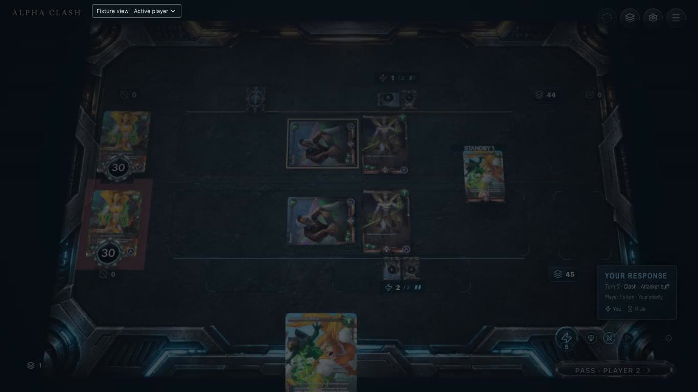
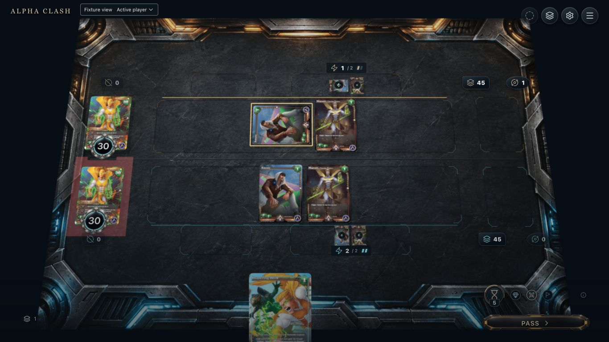
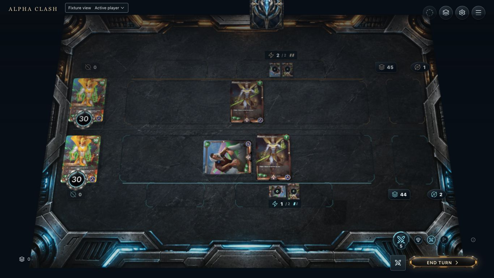

11. Available
Captured baseline: Shattering Blow has a legal attacker-step action in hand inspection. Proposed source accent should remain readable on the board.

22. Hover / focus
Captured owner-grouped native candidates. Proposed focus outlines and source-to-target link must retain owner and zone cues.
3. Selected
Proposed over an unpaid native target tray: stage the target and one green payment before explicit Confirm. Current single-target click auto-commits; this is not a captured selected draft.

44. Pending
Captured at 3 seconds of the normal recording: public Shattering Blow is in Standby while Player 2 has response priority. Seat veil darkens the board; add a persistent declared-target relation.

55. Resolving
Captured after native attacker buff resolution, at defender step. Numeric 4/4 is proved by native projection tests; the current board does not make those effective values readable.

66. Completed
Captured Victory variant: obstructor defeated; granted follow-up sends the own set accessory to Oblivion. The attacker survives. Buff persists until End turn; show the native expiry separately.